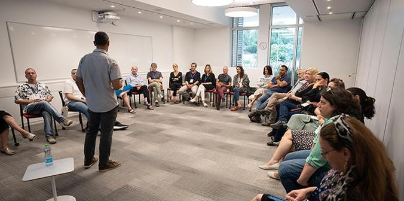

Sarit Barzilai, a graduate of Cohort 11 of the Mandel School for Educational Leadership, displays her book (Photo: Simanim)
More than 50 graduates of Mandel leadership programs presented their literary works at the first Mandel Graduate Book Fair, which took place at the Mandel Foundation–Israel headquarters in Jerusalem. Held during Israeli Book Week, which is marked in bookstores and public spaces in Israel in June of each year, the festive event included a variety of sessions and activities led by the graduates, such as meetings with authors and cultural performances inspired by the written word.
The event opened with a book display at which authors were able to network and discuss their publications with other members of the Mandel community. The books on display represented a wide range of social, political and cultural topics and offered a window into the personal and professional worlds of Mandel graduates. The number and variety of books testified to the diversity and richness of the Mandel graduate community, whose members have published books of all genres including non-fiction, poetry, prose, children’s books, art books and more.

One of 11 sessions hosted by graduate authors (Photo: Simanim)
Among the books displayed at the book fair are a novel about a romance between two IDF officers – one religious and one secular – by
Amir Fridman, a graduate of the Mandel IDF Educational Leadership Program; a bilingual book of Hebrew and Arabic Poetry by Saad Abu Ghanam, a graduate of the Mandel Program for Cultural Leadership in the Negev; a manual on unlocking desire in long-term relations by
Dr. Michal Prins, a graduate of the Mandel Program for Leadership in Jewish Culture; and an autobiographic book on the triumph over socio-economic gaps by
MK Michael Biton, a graduate of the Mandel School for Educational Leadership.
During the event, 20 graduates led 11 different sessions related to literature and culture, including writing workshops, meetings with authors, poetry readings, musical performances, and workshops celebrating the power of the written word. These sessions enabled participants to become acquainted not only with texts but with the creative process behind them and generated in-depth discussions and questions on a broad range of topics relevant to the graduates.
At the conclusion of the event, participants convened in the auditorium for a plenum with a panel discussion on literature in Israel today.
Moshe Vigdor, director general of the Mandel Foundation–Israel, welcomed participants saying, “We at Mandel cherish the written word. We understand the importance of text and of being able to tell a story.” The panel was moderated by an expert storyteller:
Chen Artzi Sror, a journalist for Yedioth Ahronoth and director of the Mandel Program for Leadership in Jewish Culture. The speakers were
Joel Pinto, a journalist, cultural critic and TV presenter on the Kan-Tarbut Network; Noa Manheim, a literary and screenplay editor, essayist, and publicist, and
Yishai Sarid, an Israeli writer and lawyer who has published numerous books that have been translated into a variety of languages.
Following the success of the first Mandel Graduate Book Fair, it is hoped that this will become an annual event of the Mandel Foundation–Israel during Israeli Book Week.
For the full catalog of books click here (Hebrew) >>
Mandel graduate facilitators welcome participants to the plenum (Photo: Simanim)
{kind=link}
{kind=link}
{kind=link}